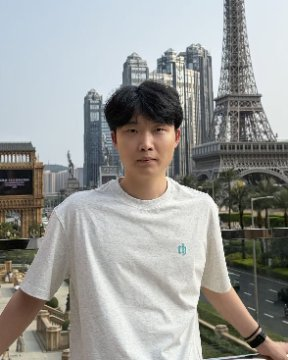

01
RecPro
Reconstructing Masked Query via Proposal-based Learning in MLLMs for Video Temporal Grounding
基于提案学习的多模态大模型微调框架，探索视频中的语言查询与时间片段之间的关联。
让智能理解世界，
也在真实世界中行动。
从片段中定位语义，
在时间里建立关联。
让模型、工具与环境相连接，
把理解转化为行动。
车载系统、家庭机器人、本地智能体。
从研究出发，构建真实系统。
从看见，到理解，
再到自主行动。
我关注多模态模型如何理解动态世界，以及智能体如何将感知与推理转化为真实场景中的行动。
从视频时序定位到视听事件解析，
探索动态内容的理解与生成。
Reconstructing Masked Query via Proposal-based Learning in MLLMs for Video Temporal Grounding
基于提案学习的多模态大模型微调框架，探索视频中的语言查询与时间片段之间的关联。
Dual-Temporal and Boundary-Aware Progressive Fusion for On-line Audio-Visual Event Parsing
面向在线视听事件解析，研究双时序建模与边界感知的渐进式融合。
Movie Commentary Generation Agent
定义电影到短视频解说的生成任务、基准与评估指标，设计端到端解说生成智能体。
从车载屏幕到家庭空间，
构建能够落地的智能体系统。
从零构建车机屏幕操作数据集与训练流水线。通过多模态模型微调，让智能体理解界面并执行点击、滑动等操作。
面向家庭的陪伴机器人。以端云可切换的 Agent 为底座，通过语音或 App 调用人脸识别、实时聊天、宠物跟踪与导航建图等能力。
为实验室本地化部署 Agent 框架与 vLLM 模型，让模型与工具在本地协同工作，降低保密数据泄露风险。

我是李恒昊，也可以叫我 Hugh。目前在哈尔滨工业大学（深圳）攻读计算机科学与技术博士，关注多模态智能体与视频理解。
我喜欢快速学习并尝试新技术，也享受与团队一起把研究想法变成可运行系统的过程。
计算机科学与技术 · 保送直博
软件工程 · 本科
Python · C++ · PyTorch · CUDA
LLM 训练与微调 · SenseCore
Agent 部署 · vLLM
参与 TIP、AAAI 等期刊与会议审稿
阳光心理健康协会会长
实验室管理与团队协作
钢琴与单簧管，探索旋律的秩序。
乒乓球，在节奏中保持专注。
辽宁省优秀毕业生
哈尔滨工业大学优秀学生、优秀团员
大连理工大学优秀团员